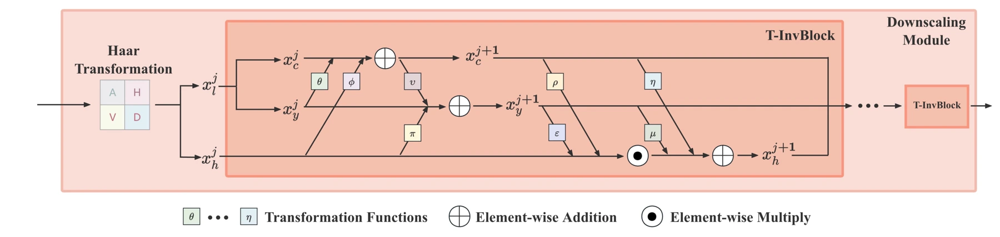
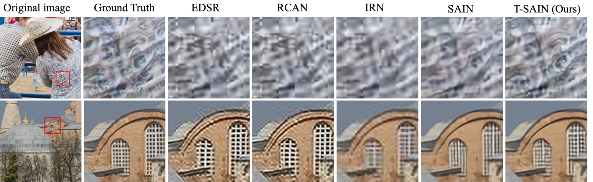

Image rescaling treats the reduction and recovery of resolution as a joint problem. Invertible networks provide a shared framework, but conventional two-branch designs can leave redundancy in low-frequency RGB information.
图像重缩放将降采样和分辨率恢复视为一个联合问题。可逆网络提供了统一框架，但传统双分支设计可能在低频 RGB 表示中保留冗余。
This makes the low-resolution image more than a display output. It is also the representation from which the high-resolution image must later be recovered.
因此，低分辨率图像不只是显示结果，也是之后恢复高分辨率图像所依赖的信息载体。
Separating brightness, color and detail分离亮度、色彩与细节
T-InvBlocks splits the low-frequency representation into luminance and chrominance components, alongside the high-frequency branch. An all-zero high-frequency mapping during upscaling encourages essential recovery information to remain in the low-resolution image. The block is designed to fit into existing rescaling architectures.
T-InvBlocks 将低频表示拆分为亮度和色度，再与高频分支结合。上采样时对高频分量采用全零映射，促使关键恢复信息保留在低分辨率图像中。该模块可以集成到已有重缩放网络。
The three branches are not three independent predictions of the same image. They assign different roles to luminance, chrominance and high-frequency information within an invertible mapping. Setting the high-frequency input to zero during reconstruction removes reliance on a sampled detail code and pressures the learned downscaler to retain useful recovery information in the smaller image. The benefit comes from redesigning what is stored, not simply adding more network depth.
三个分支并不是对同一图像做三次独立预测，而是在可逆映射中为亮度、色度和高频信息分配不同角色。重建时将高频输入设为零，减少对采样细节编码的依赖，并促使学习式降采样器将有效恢复信息保留在小图中。收益来自重新设计存储内容，而非单纯加深网络。
{kind=link}

Testing a block inside existing systems在既有系统中检验模块
The authors insert the block into both IRN-style rescaling and SAIN-style compression-aware pipelines. Ordinary reconstruction and JPEG-compressed reconstruction are evaluated separately, including multiple quality factors and 2×/4× scaling. The comparison keeps model size in view and includes ablations of the high-frequency mapping. This tests whether the block is a reusable representation change rather than a gain confined to one complete network.
作者将模块接入 IRN 类缩放网络和 SAIN 类压缩感知流程，分别评估普通重建与 JPEG 压缩后重建，覆盖多个质量因子及 2×、4× 缩放。实验同时比较模型规模并消融高频映射，以确认收益来自可复用的表征改进，而非仅适用于某一完整网络。
What changes when the branches change分支设计改变了什么
On DIV2K with JPEG compression, T-SAIN improves PSNR over SAIN by 0.4–0.6 dB at 2× rescaling and 0.2–0.5 dB at 4× across the tested quality factors, with similar parameter counts. The gain shows that separating luminance and chrominance can preserve useful reconstruction information even after lossy encoding.
在带 JPEG 压缩的 DIV2K 实验中，T-SAIN 相比 SAIN 在测试质量因子下，2× 缩放的 PSNR 提升 0.4–0.6 dB，4× 提升 0.2–0.5 dB，参数量相近。这表明亮度与色度分离有助于在有损编码后保留重建信息。
{kind=link}

Rescaling as an information-allocation problem把缩放视为信息分配问题
Learned rescaling controls both the smaller image and its reconstruction, unlike super-resolution applied to an arbitrary input. That extra control is what makes information placement in the low-resolution representation useful. The result is especially relevant to a coordinated encode/decode pipeline; it should not be read as the same problem as recovering an uncontrolled image downloaded from the web.
学习式缩放同时控制小图生成与后续重建，与对任意输入做超分辨率不同。正是这种额外控制，使信息在低分辨率表征中的分配成为有效手段。因此，该结果更适用于协同设计的编码—解码流程，而不等同于恢复任意网络图片。
Paper & authors论文与作者
Plug-and-Play Tri-Branch Invertible Block for Image Rescaling ↗
Cite this work
@misc{bao2024plugandplaytribranchinvertibleblock,
title = {Plug-and-Play Tri-Branch Invertible Block for Image Rescaling},
author = {Jingwei Bao
and Jinhua Hao
and Pengcheng Xu
and Ming Sun
and Chao Zhou
and Shuyuan Zhu},
year = {2024},
eprint = {2412.13508},
archivePrefix = {arXiv},
primaryClass = {eess.IV},
url = {https://arxiv.org/abs/2412.13508}
}